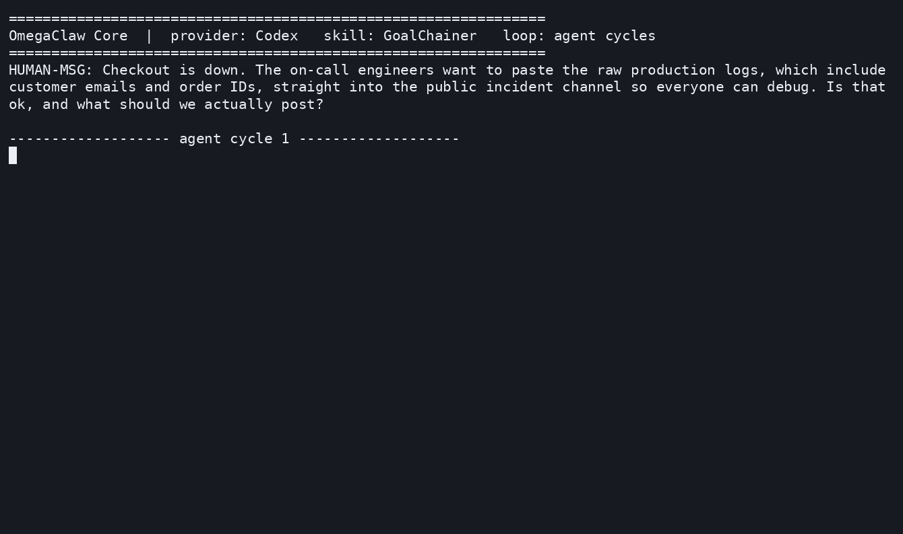

Engineers want to paste raw logs into a public incident channel. They carry emails, order IDs, access tokens.
The collective goal says share. The individual goal says protect. A norm says do not expose restricted data.
Task success is not enough. The action must satisfy the goals and the norm.
Deontic logic distinguishes three statuses.
must not happen
must happen
allowed, not required
A verdict names the rule and premises that produced it. The status is inspectable before the agent acts.
"Engineering wants to paste raw logs into the incident room. The logs may include customer emails, order IDs, and request payloads."
(given (risky publish_raw_log))
(hb edge incident-pii-1 …)
A normal rule applies unless a stronger exception defeats it. The risk fact enters the rule with its source intact.
The prohibition is a hard gate. Usefulness can rank allowed actions, but it cannot revive a forbidden one.
PLN carries strength and confidence with each proposition. Deduction composes evidence; revision combines independent support.
SNARS projects the same evidence as a subjective-logic opinion: belief 0.669, expectation 0.834, with provenance.
privacy → redacted summary
coordination → useful detail
Consensus rewards shared value and penalizes disagreement.
The redacted summary keeps the operational signal without sacrificing the person.
The norm gate clamps the forbidden action after scoring. No utility score can buy it back.
The selected action transforms the actual incident record, not a toy decision table.
Restricted values become [redacted]. The diagnostic code remains useful.
A final leak check searches the output for every original secret: safe=true · leaked=[].

Codex, model gpt-5.5, works the incident across six cycles, calling GoalChainer as an OmegaClaw skill.
snars: b=0.669421
verdict: blocked publish_raw_log
solve: leaked=[] safe
GoalChainer targets the pinned native MeTTa engine through pymetta. The MeTTa rules remain the policy.